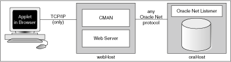

5 Features Specific to JDBC Thin
This chapter introduces the Java Database Connectivity (JDBC) Thin client and covers the features supported only by the JDBC Thin driver. It also provides basic information about working with Oracle JDBC applets. This following topics are covered in this chapter:
5.1 Overview of JDBC Thin Client
The JDBC Thin client is a pure Java, Type IV driver. It is lightweight and easy to install. It provides high performance, comparable to the performance provided by the JDBC Oracle Call Interface (OCI) driver. The JDBC Thin driver is written entirely in Java, and therefore, it is platform-independent. Also, this driver does not require any additional Oracle software on the client-side.
The JDBC Thin driver communicates with the server using TTC, a protocol developed by Oracle to access data from Oracle Database. It can be used for application servers as well as for applets. The driver allows a direct connection to the database by providing an implementation of TCP/IP that implements Oracle Net and TTC on top of Java sockets. Both of these protocols are lightweight implementation versions of their counterparts on the server. The Oracle Net protocol runs over TCP/IP only.
The JDBC Thin driver can be used on both the client-side and the server-side. On the client-side, drivers can be used in Java applications or Java applets that run either on the client or in the middle tier of a three-tier configuration. On the server-side, this driver is used to access a remote Oracle Database instance or another session on the same database.
5.2 Additional Features Supported
The JDBC Thin driver supports all standard JDBC features. The JDBC Thin driver also provides support for the following additional features:
5.2.1 Default Support for Native XA
Similar to the JDBC OCI driver, the JDBC Thin driver also provides support for Native XA. However, the JDBC Thin driver provides support for Native XA by default. This is unlike the case of the JDBC OCI driver, in which the support for Native XA is not enabled by default.
See Also:
5.2.2 Support for Transaction Guard
Transaction Guard feature provides a generic infrastructure for at-most-once execution during planned and unplanned outages and duplicate submissions. Transaction Guard feature (along with Application Continuity feature) provides transparent session recovery and replay of SQL statements (queries and DMLs) since the beginning of the in-flight transaction.
See Also:
5.2.3 Support for Application Continuity
Application Continuity provides a general purpose, application-independent infrastructure that enables recovery of work from an application perspective, after the occurrence of a planned or unplanned outage. It provides the following benefits:
-
Masking of outages from the end user
-
Recovery of user environments, in-flight transactions, and lost outcome
-
A single, easy, and foolproof method for applications to recover
-
A definite target response time for applications, regardless of outages
See Also:
5.2.4 Support for Applets
The JDBC Thin driver is the only Oracle JDBC driver that provides support for applets. This driver can be downloaded along with the Java applet that is being run in a browser.
Note:
When the JDBC Thin driver is used with an applet, the browser used on the client-side must have the capability to support Java sockets.
The HTTP protocol, which is usually used for communication over a network, is stateless. However, the JDBC Thin driver is not stateless. Therefore, the initial HTTP request to download the applet and the JDBC Thin driver is stateless. After the JDBC Thin driver establishes the database connection, the communication between the browser and the database is stateful and in a two-tier configuration.
See Also:
5.3 JDBC in Applets
You can use only the Oracle JDBC Thin driver for an applet. This section describes what you must do to connect an applet to a database. This description includes how to use the Connection Manager feature of Oracle Database, or signed applets if you are connecting to a database that is running on a different host from the Web server. It also describes how your applet can connect to a database through a firewall. The section concludes with how to package and deploy the applet.
The following topics are covered:
5.3.1 About Connecting to the Database Through the Applet
The most common task of an applet using the JDBC driver is to connect to and query a database. Because of applet security restrictions, unless particular steps are taken, an applet can open TCP/IP sockets only to the host from which it was downloaded. This is the host on which the Web server is running. This means that without these steps, your applet can connect only to a database that is running on the same host as the Web server.
If your database and Web server are running on the same host, then there is no issue and no special steps are required. You can connect to the database as you would from an application.
As with connecting from an application, there are two ways in which you can specify the connection information to the driver. You can provide it in the form of host:port:service_name or in the form of TNS keyword-value syntax.
For example, if the database to which you want to connect resides on the localost, at port 5221, and service name orcl, and you want to connect with user name HR and password hr, then use either of the two following connection strings:
-
Using
host:port:service_namesyntax:String connString="jdbc:oracle:thin:@localhost:5221:orcl"; OracleDataSource ods = new OracleDataSource(); ods.setURL(connString); ods.setUser("HR"); ods.setPassword("hr"); Connection conn = ods.getConnection(); -
Using TNS keyword-value syntax:
String connString = "jdbc:oracle:thin:@(description=(address_list=(address=(protocol=tcp) (port=5221)(host=localHost)))(connect_data=(INSTANCE_NAME=orcl)))"; OracleDataSource ods = new OracleDataSource(); ods.setURL(connString); ods.setUser("HR"); ods.setPassword("hr"); Connection conn = ods.getConnection();
If you use the TNS keyword-value pair to specify the connection information to the JDBC Thin driver, then you must declare the protocol as TCP.
However, a Web server and database server both require many resources. You seldom find both servers running on the same computer. Usually, your applet connects to a database on a host other than the one on which the Web server runs. If you want your applet to connect to a database running on a different computer, then you have the following options:
-
Use the Oracle Connection Manager on the host computer. The applet can connect to the Connection Manager, which connects to a database on another computer.
Your applet can also take advantage of the data encryption and integrity checksum features of the Advanced Security option of Oracle Database.
5.3.2 Connecting to a Database on a Different Host Than the Web Server
If you are connecting to a database on a host other than the one on which the Web server is running, then you must overcome applet security restrictions. You can do this in the following ways:
5.3.2.1 Using the Oracle Connection Manager
This section describes the following concepts:
5.3.2.1.1 Overview of Using the Connection Manager
The Oracle Connection Manager is a lightweight, highly scalable program that can receive Oracle Net packets and retransmit them to a different server. To a client running Oracle Net, the Connection Manager looks exactly like a database server. An applet that uses the JDBC Thin driver can connect to a Connection Manager running on the Web server host and have the Connection Manager redirect the Oracle Net packets to an Oracle server running on a different host.
Figure 5-1 illustrates the relationship between the applet, the Oracle Connection Manager, and the database.
Figure 5-1 Applet, Connection Manager, and Database Relationship
Description of "Figure 5-1 Applet, Connection Manager, and Database Relationship "
Using the Oracle Connection Manager requires two steps:
5.3.2.1.2 Installing and Running the Oracle Connection Manager
You must install the Connection Manager, available on the Oracle distribution media, onto the Web server host.
On the Web server host, create a CMAN.ORA file in the ORACLE_HOME/NET8/ADMIN directory. The options you can declare in a CMAN.ORA file include firewall and connection pooling support.
Here is an example of a very simple CMAN.ORA file. Replace web-server-host with the name of your Web server host. The fourth line in the file indicates that the Connection Manager is listening on port 1610. You must use the same port number in your connection string for JDBC.
cman = (ADDRESS_LIST =
(ADDRESS = (PROTOCOL=TCP)
(HOST=web-server-host)
(PORT=1610)))
cman_profile = (parameter_list =
(MAXIMUM_RELAYS=512)
(LOG_LEVEL=1)
(TRACING=YES)
(RELAY_STATISTICS=YES)
(SHOW_TNS_INFO=YES)
(USE_ASYNC_CALL=YES)
(AUTHENTICATION_LEVEL=0)
)
After you create the file, start the Connection Manager at the operating system prompt with the following command:
cmctl start
Note:
While installing Oracle Connection Manager, if you choose to run Oracle Connection Manager services as an authenticated user, then the cmctl command asks for a password. But, if you choose to run Oracle Connection Manager services as a local service account, then the cmctl command does not ask for a password.
To use your applet, you must now write the connection string for it.
5.3.2.1.3 Writing the URL that Targets the Connection Manager
The following text describes how to write the URL in your applet, so that the applet connects to the Connection Manager and the Connection Manager connects with the database. In the URL, you specify an address list that lists the protocol, port, and name of the Web server host on which the Connection Manager is running, followed by the protocol, port, and name of the host on which the database is running.
The following example describes the configuration illustrated in Figure 5-1. The Web server on which the Connection Manager is running is on host webHost and is listening on port 1610. The database to which you want to connect is running on host oraHost, listening on port 5221, and service name orcl. You write the URL in TNS keyword-value format:
String myURL =
"jdbc:oracle:thin:@(description=(address_list=
(address=(protocol=tcp)(port=1610)(host=webHost))
(address=(protocol=tcp)(port=5221)(host=oraHost)))
(connect_data=(INSTANCE_NAME=orcl))
(source_route=yes))";
OracleDataSource ods = new OracleDataSource();
ods.setURL(myURL);
ods.setUser("HR");
ods.setPassword("hr");
Connection conn = ods.getConnection();
The first element in the address_list entry represents the connection to the Connection Manager. The second element represents the database to which you want to connect. The order in which you list the addresses is important.
When your applet uses a URL, such as the preceding one, it will function exactly as if it were connected directly to the database on the host oraHost.
5.3.2.1.4 Connecting Through Multiple Connection Managers
Your applet can reach its target database even if it first has to go through multiple Connection Managers. For example, if the Connection Managers form a proxy chain. To do this, add the addresses of the Connection Managers to the address list, in the order that you plan to access them. The database listener should be the last address on this list.
5.3.2.2 Using Signed Applets
In a Java Development Kit (JDK) 1.2.x-based or later browser, an applet can request socket connection privileges and connect to a database running on a different host than the Web server host. Starting from Netscape 4.0, you perform this by signing your applet, that is, writing a signed applet. You must follow these steps:
For information about the Java Security API, including signed applet examples, see the following site:
http://www.oracle.com/technetwork/java/javase/tech/index-jsp-136007.html
5.3.3 Overview of Using Applets with Firewalls
Under standard circumstances, an applet that uses the JDBC Thin driver cannot access the database through a firewall. In general, the purpose of a firewall is to prevent unauthorized clients from reaching the server. In the case of applets trying to connect to the database, the firewall prevents the opening of a TCP/IP socket to the database.
In general, firewalls are rule-based. They have a list of rules that define which clients can connect, and which cannot. Firewalls compare the host name of the client with the rules and, based on this comparison, either grant the client access or deny access. If the host name lookup fails, then the firewall tries again. This time, the firewall extracts the IP address of the client and compares it to the rules. The firewall is designed to do this so that users can specify rules that include host names as well as IP addresses.
You can solve the firewall issue by using an Oracle Net-compliant firewall and connection strings that comply with the firewall configuration. Oracle Net-compliant firewalls are available from many leading vendors.
An unsigned applet can access only the same host from which it is downloaded. In this case, the Oracle Net-compliant firewall must be installed on that host. In contrast, a signed applet can connect to any host. In this case, the firewall on the target host controls the access.
Connecting through a firewall requires two steps, as described in the following sections:
5.3.3.1 Configuring a Firewall for Applets that use the JDBC Thin Driver
The instructions in this section assume that you are running an Oracle Net-compliant firewall.
Java applets do not have access to the local system. Because of the security limitations, applets cannot access the host name or environment variables on the local system. As a result, the JDBC Thin driver cannot access the host name on which it is running. The firewall cannot be provided with the host name. To allow requests from JDBC Thin clients to go through the firewall, you must do the following to the list of firewall rules:
-
Add the IP address, and not the host name, of the host on which the JDBC applet is running.
-
Ensure that the host name, "
__jdbc__", never appears in the firewall rules. This host name has been hard-coded as a false host name inside the driver to force an IP address lookup. If you do enter this host name in the list of rules, then every applet using the JDBC Thin driver will be able to go through your firewall.
5.3.3.2 Writing a URL to Connect Through a Firewall
To write a URL that enables you to connect through a firewall, you must specify the name of the firewall host and the name of the database host to which you want to connect.
For example, if you want to connect to a database on host oraHost, listening on port 5221, with service name orcl, and you are going though a firewall on host fireWallHost, listening on port 1610, then use the following URL:
OracleDataSource ods = new OracleDataSource();
ods.setURL("jdbc:oracle:thin:" +
"@(description=(address_list=" +
(address=(protocol=tcp)(host=<firewall-host>)(port=1610))" +
"(address=(protocol=tcp)(host=oraHost)(port=5221)))" +
"(source_route=yes)" +
"(connect_data=(service_name=orcl)))");
);
ods.setUser("HR");
ods.setPassword("hr");
Connection conn = ods.getConnection();
Note:
To connect through a firewall, you cannot specify the URL in host:port:service_name syntax. For example, a URL specified as follows will not work:
String connString ="jdbc:oracle:thin:@example.us.oracle.com:5221:orcl";OracleDataSource ods = new OracleDataSource(); ods.setURL(connString); ods.setUser("HR"); ods.setPassword("hr"); Connection conn = ods.getConnection();
The first element in the address_list represents the connection to the firewall. The second element represents the database to which you want to connect. Note that the order in which you specify the addresses is important.
You can also write the preceding URL in the following format:
String connString =
"jdbc:oracle:thin:@(description=(address_list=
(address=(protocol=tcp)(port=1600)(host=fireWallHost))
(address=(protocol=tcp)(port=5221)(host=oraHost)))
(connect_data=(INSTANCE_NAME=orcl))
(source_route=yes))";
OracleDataSource ods = new OracleDataSource();
ods.setURL(connString);
ods.setUser("HR");
ods.setPassword("hr");
Connection conn = ods.getConnection();
When your applet uses a URL similar to the preceding URL, it will act as if it were connected to the database on host oraHost.
Note:
All the parameters shown in the preceding example are required. In address_list, the firewall address must precede the database server address.
5.3.4 Packaging Applets
After you have coded your applet, you must package it and make it available to users. To package an applet, you will need your applet class files and the JDBC driver class files contained in the ojdbc6.jar or ojdbc7.jar files.
Follow these steps:
You can now make the applet available to users. One way to do this is to add the APPLET tag to the HTML page from which the applet will be run. For example:
<APPLET WIDTH=500 HEIGHT=200 CODE=JdbcApplet ARCHIVE=JdbcApplet.zip
CODEBASE=Applet_Samples
</APPLET>
5.3.5 Overview of Specifying an Applet in an HTML Page
5.3.5.1 CODE, HEIGHT, and WIDTH
The HTML page that runs the applet must have an APPLET tag with an initial width and height to specify the size of the applet display area. You use the HEIGHT and WIDTH attributes to specify the size, measured in pixels. This size should not count any windows or dialog boxes that the applet opens.
The APPLET tag must also specify the name of the file that contains the compiled applet. Specify the file name with the CODE attribute. Any path specified must be relative to the base URL of the applet. The path cannot be absolute.
In the following example, JdbcApplet.class is the name of the compiled applet:
<APPLET CODE="JdbcApplet" WIDTH=500 HEIGHT=200> </APPLET>
If you use this form of the CODE attribute, then the classes for the applet and the JDBC Thin driver must be in the same directory as the HTML page.
Note:
Do not include the file name extension, .class, in the CODE attribute.
5.3.5.2 CODEBASE
The CODEBASE attribute is optional. It specifies the base URL of the applet, that is, the name of the directory that contains the code of the applet. If it is not specified, then the URL of the document is used. This means that the classes for the applet and the JDBC Thin driver must be in the same directory as the HTML page. For example, if the current directory is my_Dir:
<APPLET WIDTH=500 HEIGHT=200 CODE=JdbcApplet CODEBASE="." </APPLET>
The attribute, CODEBASE=".", indicates that the applet resides in the current directory, my_Dir.
Now, consider that the value of CODEBASE is set to Applet_Samples, as follows:
<APPLET WIDTH=500 HEIGHT=200 CODE=JdbcApplet CODEBASE="Applet_Samples" </APPLET>
This would indicate that the applet resides in the my_Dir/Applet_Samples directory.
5.3.5.3 ARCHIVE
The ARCHIVE attribute is optional. It specifies the name of the archive file that contains the applet classes and resources the applet needs. Oracle recommends using an archive file, which saves many extra round-trips to the server.
The archive file will be preloaded. If you have more than one archive file in the list, separate them with commas. In the following example, the class files are stored in the archive file, JdbcApplet.zip:
<APPLET CODE="JdbcApplet" ARCHIVE="JdbcApplet.zip" WIDTH=500 HEIGHT=200> </APPLET>
Note:
Version 3.0 browsers do not support the ARCHIVE attribute.